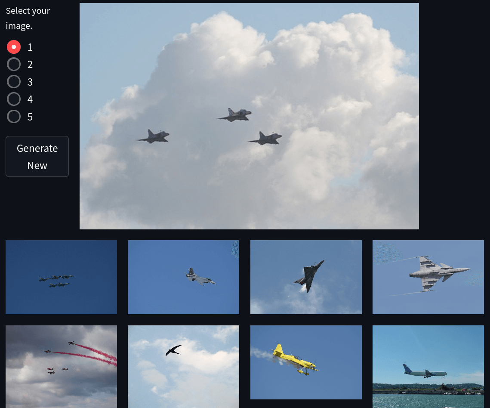
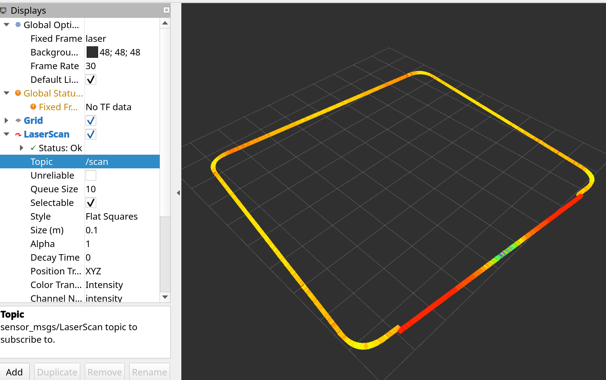
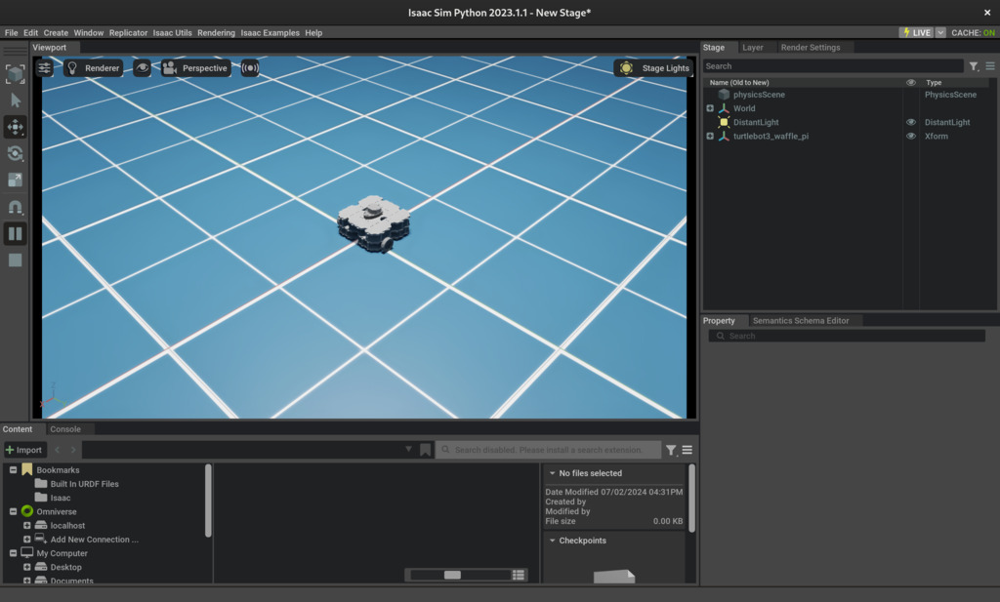
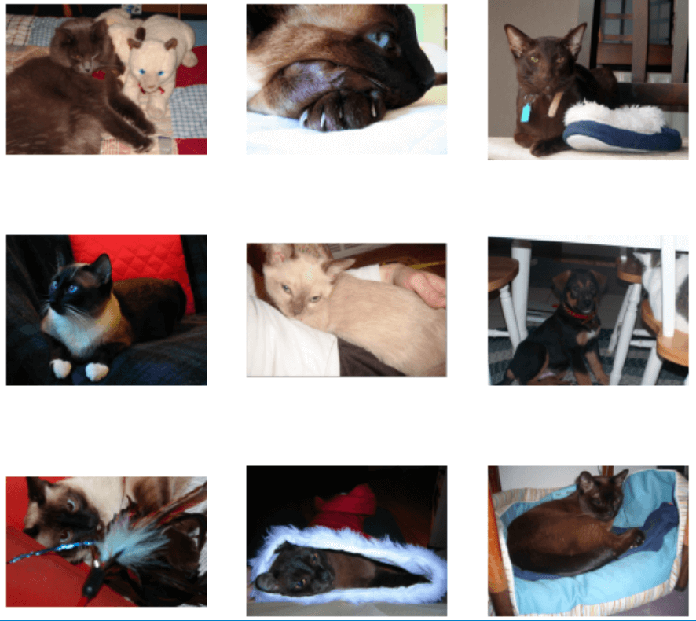
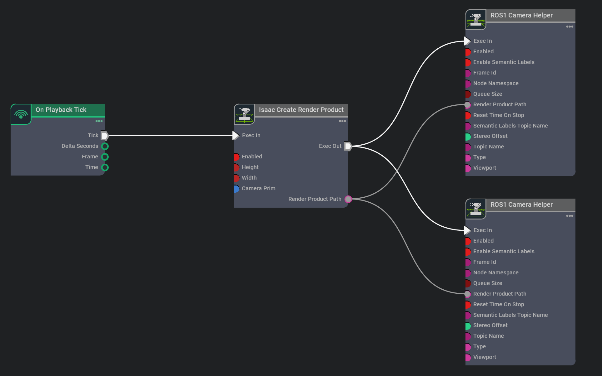
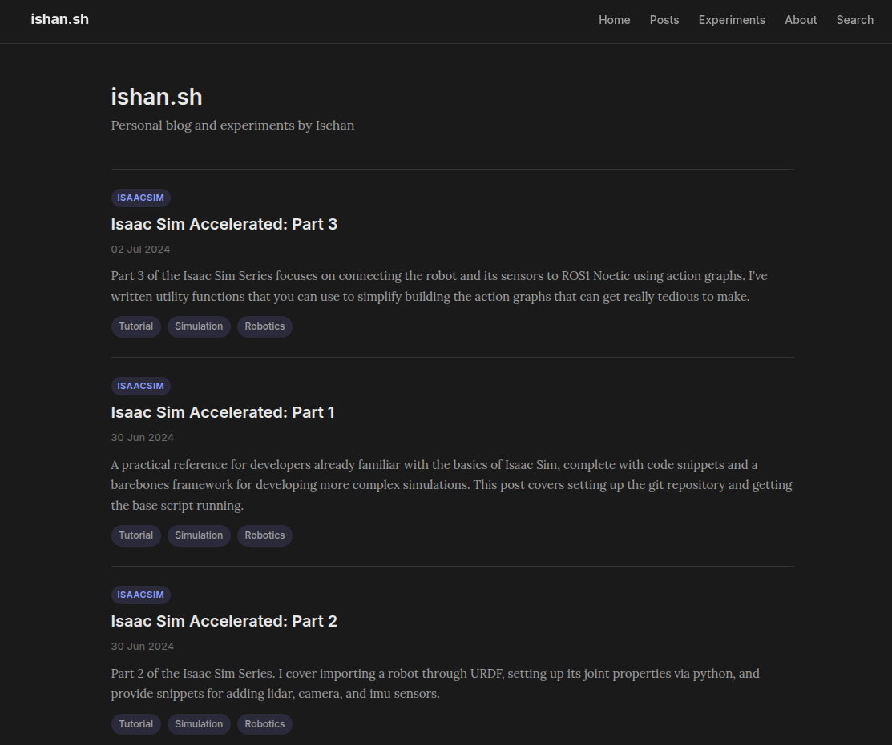

Isaac Sim Accelerated: Part 1
A practical reference for developers familiar with Isaac Sim basics, from repo setup to the first runnable script.
Read post →feed card playground
Closest to the current site: readable, calm, and good when excerpts matter.
A practical reference for developers familiar with Isaac Sim basics, from repo setup to the first runnable script.
Read post →A quick project for learning ResNet embeddings, vector search, and deploying a small PyTorch demo.

Great for a homepage feed where the newest/featured post should dominate.

A chunky feature card with high contrast image treatment and big editorial type.
Smol computer use extension, ported in one sitting.
Embeddings, nearest neighbors, and a scrappy demo app.
A smaller rail card for related posts or continuation links.
Varied card sizes make the feed feel exploratory without becoming random.

Import robot descriptions, inspect joints, and keep the workflow repeatable.
Build a tiny image retrieval system from feature vectors.
Quick benchmark notes and screenshots from local model testing.
Sensor snippets, RViz checks, and gotchas.
An experiment card can be shorter and punchier.
Best if the feed should feel like a lab notebook or development log.
Used pi and GPT 5.5 to extend the computer-use extension to Ubuntu.
Repository setup and the base script for more complex simulations.
A simple vector-search project with pretrained ResNet features.
A nerdier direction for experiments: compact, distinctive, and very scan-friendly.
Setup repo, launch standalone app, load environment.
Generate embeddings for a toy image search engine.
Short experiment, screenshots, videos, done.
High-impact visual layout for posts with strong screenshots, videos, or diagrams.

Let the screenshot do most of the selling.

Useful when diagrams are the memorable bit.

A card direction for quick logs and tests.
For archive pages: less beautiful, more useful. Easy to scan and sort mentally.
More playful and personal; useful if you want the site to feel handmade.
“I wanted a post like this but couldn’t find one.”
ResNet embeddings, a tiny database, and nearest-neighbor search.
Ten-minute experiment energy, with video proof.